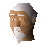

Dark mage

| Config name | upassmage |
| NPC id | 1001 |
| Combat level | 13 |
| Options | Talk-to |
| Wander range | 5 tiles from spawn |
| Area folder | area_ardougne_west |
| Defined in | scripts/areas/area_ardougne_west/configs/darkmage.npc |
Dark mage
A dark magic user.
Show all 1 spawn on the world map → Open in knowledge graph →
Locations
| Area | Coordinates | Level | Count | Map |
|---|---|---|---|---|
| Underground Pass | 2457, 3309 | 0 | 1 | view |
Dialogue
PlayerHello there.
Dark mageWhy do you interrupt me, traveller?
PlayerI'm just looking around.
Dark mageThere's nothing to see here, just despair and death.
PlayerI just wondered what you're doing?
Dark mageI experiment with dark magic. It's a dangerous craft.
PlayerCould you fix this staff?
Dark mageAlmighty Zamorak! The Staff of Iban!
PlayerCan you fix it?
Dark mageThis truly is dangerous magic, traveller. I can fix it, but it will cost you. The process could kill me.
PlayerHow much?
Dark mage200,000 gold pieces. Not a penny less.
PlayerOops! I'm a bit short.
PlayerThanks. I appreciate that.
Dark mageYou be careful with that thing!
Dark mage...Fine by me.
Referenced in scripts
scripts/areas/area_ardougne_west/scripts/darkmage.rs2